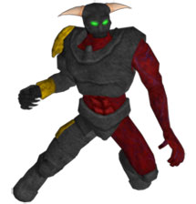

Die Champions
Name: Jen Comu
Alter: 25
Königreich: Serengania
Magische Vorliebe: Eis
Hintergrund:
Ausgestattet mit der Magie des Eises, wuchs Jen Comu als Priesterin der Drachen in Serengania auf. Tätowiert mit rituellen Drachensymbolen wurde sie in Disziplin und Verehrung für die Drachen erzogen. Ihr wurde beigebracht, dass nur ein Kaiser von Serengania die Drachen regieren sollte und das das Volk die Drachen und den Kaiser verehren sollten. Als die Drachen zurückkehrten, gab der junge Prinz Weisus Xiar, Erster Sohn des Drachenkaisers, Jen das Buch der Schuppe. Er befahl ihr, Kontrolle über den Drachengott des Wassers zu erlangen und die übrigen Bücher der Kralle, der Knochen und des Feuers zu beschaffen. Als Heldenkriegerin von Serengania, wurde Jen ebenfalls damit beauftragt, die Kontrolle über die Macht aller Drachen an Weisus abzugeben, auf dass er den Kaiser ablösen und Serengania als "Drachenmeister" allein beherrschen kann.
Jen glaubt jedoch daran, dass die Drachen besser frei sein sollten, um selbst Nakiha zu regieren. Um den Drachentempel zu verlassen und um den Drachengott des Wassers zu finden, zog sie ihr priesterliches Gewand aus und verkleidete sich als Bettlerin, um ihren Fesseln, als Heldenkriegerin von Serengania, unbemerkt entfliehen zu können. Jetzt, wo sie eine wilde und ungebundene Drachenpriesterin ist, verfolgt sie nur noch ihr Ziel: Die Bücher der Drachen wieder zu vereinigen und die Drachen zu befreien.
Name: Elziath
Alter: 450
Königreich: Andera
Magische Vorliebe: Erde
Hintergrund:
Vor 300 Jahren war Elziath der Anführer derer, welche die Magie benutzten um die Drachen in die gewaltigen Eiswüsten zu verbannen. Aus Angst, dass die Drachengötter die Menschheit zerstören wollen oder Diener des Teufels werden, hat das Königreich Andera daher diesen ehemaligen Heldenkrieger wieder auferstehen lassen. Elziath soll nun mit Hilfe des Buches der Knochen, den Drachengott und dessen Drachenfamilie in die Elemente, aus welchen jene entstanden sind, zurückverbannen.
Trotz seines Alters verwendet Elziath die Magie der Erde unglaublich kraftvoll. Seine Fähigkeiten und sein Wissen sind unübertroffen, und nur die ehrgeizigsten Heldenkrieger vermögen ihn zu besiegen. Mit Hilfe des Buches der Knochen und dem Geheimnis der Magie der Erde, sucht Elziath nun nach dem Buch der Schuppe, der Kralle und des Feuers. Nur mit diesen kann er sich sicher sein, dass die Drachengötter zu ihren Elementen zurückkehren und auch er selbst seinen Frieden finden kann.
Name: Muru Moko 
Alter: 29
Königreich: Unbekannt
Magische Vorliebe: Sturm
Hintergrund:
Als armes Kind am Rand des Königreiches von Serengania ausgesetzt, wurde Muru Moko nach den hellen und dunklen Geistern in ihm benannt. Bis zur Erlangung seiner Männlichkeit wurde er als Krieger für den Kaiser er trainiert. Er war ein athletischer, aber auch ein sehr ruhiger junger Mann. Muru Moko wurde wegen seiner Fähigkeit Nebel, Blitze und Stürme kontrollieren zu können, berühmt. Viele begannen sich jedoch vor seiner Kraft zu ängstigen und deshalb wurde er eines Tages entsandt, um sich mit dem Drachenpriester zu verbinden. Es war während eines Trainings im Drachentempel von Serengania, als er zum ersten Mal auf die schöne Drachenpriesterin Jen Comu traf. Aber trotz seines Wunsches, mit ihr zusammen zu sein, sollte Muru Mokos Aufgabe ihn weit weg von seinen Träumen führen.
Muru Moko war nämlich seiner Begierde nach Macht unterlegen. Er plante im Geheimen, die Drachen freizulassen, um so den Titel des Drachenmeisters zu erlangen und auf diesem Wege selbst Herrscher der Drachen und zugleich Kaiser von Serengania zu werden. Nicht im Stande diese Bestrebungen allein zu verwirklichen, reiste Muru Moko nach Arkhoniar und brachte das Königreich dazu, ihn das Buch der Kralle benutzen zu lassen, um mit seiner Hilfe die Drachen zu befreien. Als die Drachen erst einmal frei waren, stahl Muru Moko das Buch der Kralle. Nun steht seinen Plänen, die Drachenbücher zu vereinigen, die Herrschaft über alle Drachenfamilien zu erlangen und sich selbst zum Drachenmeister und Kaiser von Serengania auszurufen, nichts mehr im Weg.
Name: Vourak
Alter: Unbekannt
Königreich: Daeroviar
Magische Vorliebe: Feuer
Hintergrund:
Nachdem Muru Moko die Drachengötter befreit hatte, suchte das Königreich Daeroviar sofort nach einem neuen Champion, um durch dessen Sieg die allmächtigen Bestien und deren Magie kontrollieren zu können. Als die Mächtigen des Königreiches hörten, dass die Herrscher von Andera den Heldenkrieger Elziath, den unangefochtenen und besten Benutzer der Magie der Zeit, wieder zum Leben erweckt hatten, entschied Daeroviar, dass der kommende Heldenkrieger darauf vorbereitet werden müsse, für den Sieg wirklich alles zu tun.
Vourak, ein Dämonengott von altertümlichen Ritterorden, wurde herbei gerufen, um in Daroviars Mision entsandt zu werden.
Seit jener Vourak ins Reich von Vragalis, dem Gott der Zerstörung, vor langer Zeit verschleppt wurde, treibt nur noch die Liebe für Feuer und Untergang jeden seiner Befehle an.
Sollte Vourak erfolgreich sein und sollten die Drachenbücher durch seine Hilfe vereinigt werden, so wird er die Drachen versklaven und diese benutzen, um alles was ihm in den Weg kommt zu verbrennen, zu vernichten und zu zerstören und dadurch ebenso den Glauben Ra Ra Avis aufrecht zu erhalten, dass nur die Starken überleben können.